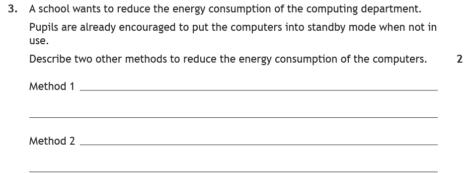
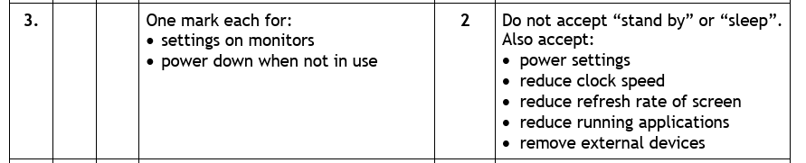
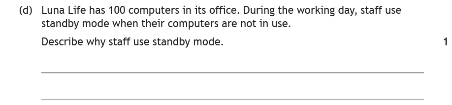
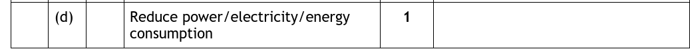

Introduction
One computer left running overnight wastes a little electricity. Now multiply that by a school of 500 machines, then by every school, office and home in the country — suddenly it's power stations' worth of wasted energy, and generating that electricity usually produces carbon emissions. That's the environmental impact of computer systems, and the fix is mostly changing a few settings. Genuinely — this is the most common-sense topic in the course.
Key Terms
The Main Three Methods
The course spec names three ways to reduce a computer system's energy use — these are your go-to exam answers:
| Method | What it involves | Why it saves energy |
|---|---|---|
| Settings on monitors | Reduce the brightness; set the monitor to switch off automatically after a period without use | The screen is one of the hungriest parts of the system — dimming or sleeping it cuts consumption directly |
| Power-down settings | Set the computer to power off at a certain time of day, or after sitting unused — schools often shut every machine down overnight | A machine that's off draws (almost) nothing |
| Standby | A low-power mode: monitor off, hard drive stopped, but no full restart needed | Uses far less than a running machine — but more than off, so it's the compromise option |
Standby deserves a second look, because it can appear in a question from either direction:
- Why use standby? — it reduces power consumption compared with leaving the machine running, while still waking quickly.
- Why is standby not ideal? — it still draws some power, so switching off fully saves more.
Other Ways to Save Energy
The big three above will earn your marks — but the markers also accept other sensible methods, and knowing a couple of extras means you're never stuck if a question rules some out (as the 2023 worked example below does with standby):
- Adjusting power settings generally (Windows/macOS energy-saver modes)
- Reducing the screen's refresh rate
- Closing applications that aren't being used — less work for the processor, less power drawn
- Removing external devices (USB drives, chargers, peripherals) that draw power
- Reducing the processor's clock speed
Worked Examples

How to tackle it: read carefully — pupils already use standby, and the question asks for two other methods. Writing "standby" scores nothing here! That leaves the other two from the main three:
- Settings on monitors — reduce brightness / switch off automatically when not in use (1 mark)
- Power down when not in use — set the computers to switch off after a period of inactivity or at a set time (1 mark)

Look at the marking instructions: "Do not accept 'stand by' or 'sleep'" — exactly the trap the question set. But notice the generous "also accept" list: power settings, reduced clock speed, lower refresh rate, closing applications, removing external devices. Plenty of routes to the marks if you read the question first.

How to tackle it: here standby is the right answer's subject, not a banned word — the question asks why staff use it. One idea earns the mark: standby reduces power/energy consumption while the machines aren't being used.

Compare this with the 2023 question — same topic, opposite angle. It's a good example of why you read the question stem before reaching for a memorised answer.
Practice Questions
A library has 40 public computers that are left fully running all day, even when nobody is using them. Describe two methods the library could use to reduce the energy consumption of the computers.
Marking Instructions
Any two of (1 mark each): change the settings on the monitors (reduce brightness / switch off automatically when unused); use power-down settings so machines switch off after a period of inactivity or at a set time; put unused machines into standby; reduce the refresh rate; close unused applications; remove external devices.
An office worker puts their computer into standby mode over lunch rather than leaving it running. Describe why this reduces the computer's environmental impact.
Marking Instructions
Standby uses much less power/energy than a fully running machine (the monitor switches off and the hard drive stops), so less electricity is consumed.
A school asks pupils to shut computers down completely at the end of the day instead of using standby. Explain why switching off is better for the environment than standby.
Marking Instructions
Standby still draws some power — over a whole night (and hundreds of machines) this adds up, so switching off completely saves more energy.